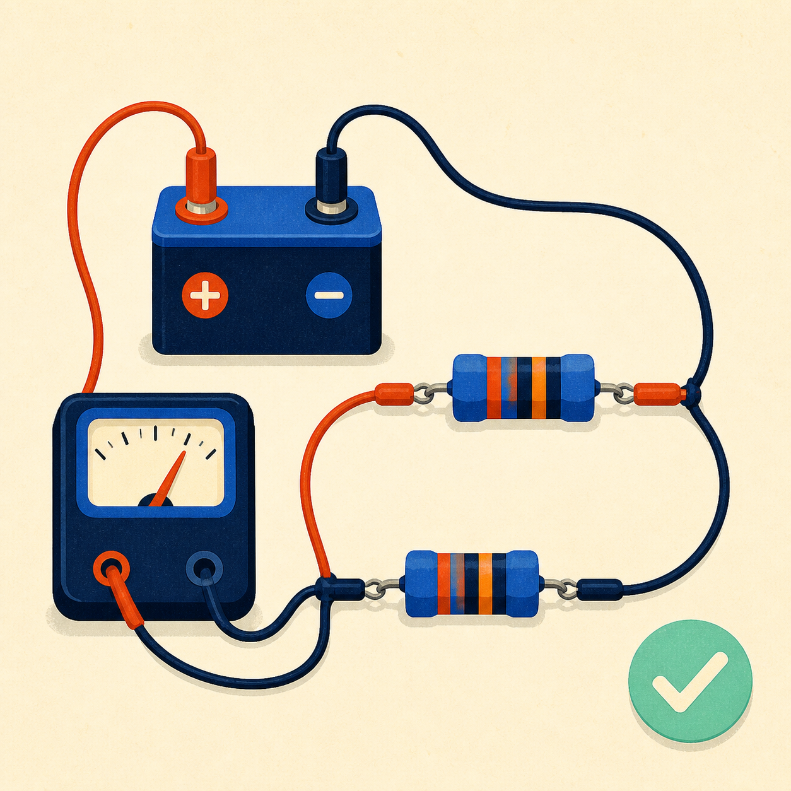

Algebra & calculus
Exact simplification, equations, derivatives, and limits.
VERIFIED • PRIVATE • OFFLINE
A native C++ engineering tutor that shows real working, assumptions, and a verification result—without needing the internet.
UNIVERSAL SOLVER
Your verified answer and reasoning will appear here.
CURRICULUM CORE
Exact simplification, equations, derivatives, and limits.
 02
02Row operations you can replay and residual checks.
Truth tables, canonical forms, and K-map foundations.

04Dividers, KCL/KVL evidence, and units that stay visible.